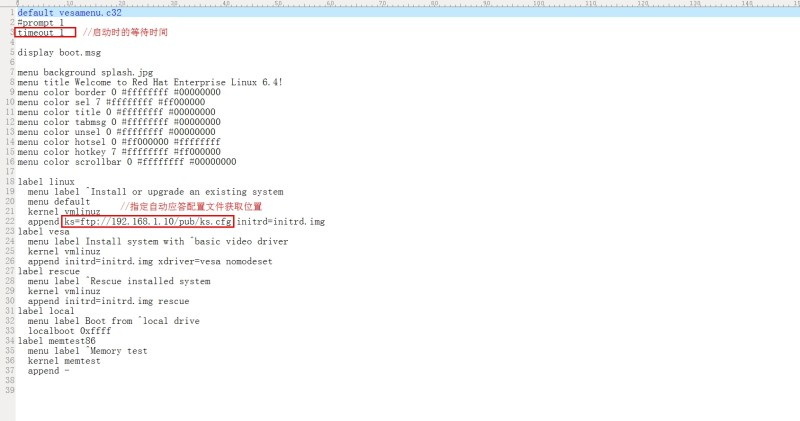
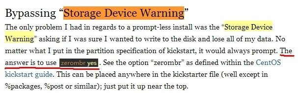
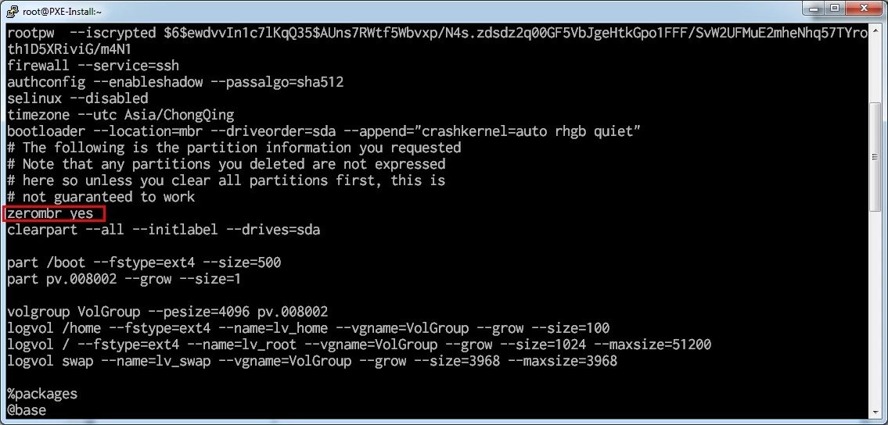
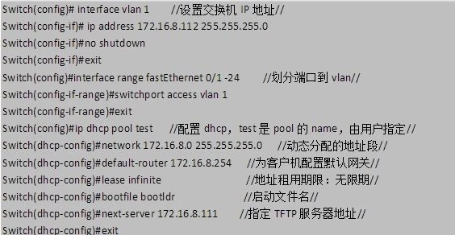

需要用到的软件包
yum -y install dhcp tftp-server nfs-utils syslinux vsftpd
kickstart的图形配置界面，system-config-kickstart
yum -y install system-config-kickstart.noarch
PXE网络安装
参考：
http://my.oschina.net/alanlqc/blog/147649 重点看这个, 原理和多菜单都给出来了; 多菜单可以配置成有多个可选ISO的环境
http://www.it165.net/os/html/201306/5331.html
http://my.oschina.net/emolee/blog/196165
用到4样东西，DHCP，TFTP，kickstart, vsftpd
- 配置DHCP 是为在安装RHEL的客户机在启动过程中获取IP地址，并由获取指定的启动文件——Linux安装环境。注意这一版本的dhcp配置文件位置应该是/etc/dhcp/dhcpd.conf。
- 配置TFTP 传送启动环境的文件
- 配置kickstart 给出自动安装的相应参数。
- 配置vsftpd 以传送安装ISO的文件
在/etc/dhcp/dhcpd.conf中添加的内容
default-lease-time 600; # 默认租期600秒
max-lease-time 7200; # 最大租期7200秒
allow booting;
allow bootp;
authoritative;
subnet 192.168.0.0 netmask 255.255.255.0 # 指定子网和掩码
{
range 192.168.0.80 192.168.0.90; # 分配IP的地址范围
next-server 192.168.0.3; # 指明tftp服务器地址
filename "pxelinux.0"; # 指明PXE客户端访问时候获取的启动环境的文件
}
只需要将/etc/xinetd.d/tftp中
disable = no
yes改为no
修改后的文本内容
service tftp
{
socket_type= dgram
protocol= udp
wait= yes
user= root
server= /usr/sbin/in.tftpd
server_args= -s /var/lib/tftpboot
disable= no
per_source= 11
cps= 100 2
flags= IPv4
}
整个流程梳理下来就是
- PXE客户端开机启动, 进入网络启动环节
- 从DHCP服务器获得了IP地址, 以及要获取的启动环境文件(在tftp配置里的filename "pxelinux.0")
- 启动环境文件的菜单项里指明要获取的kickstart文件的位置(即示例中的ks.cfg)
- kickstart文件指明了安装过程中ISO文件从哪里获取, 可以是ftp, 可以是NAS
- 开始自动应答安装
在FTP默认目录下/var/ftp/pub/创建目录，挂载ISO镜像到此处，文中是创建/var/ftp/pub/rhel6
然后拷贝了
/var/ftp/pub/rhel6/isolinux/* 到----> /var/lib/tftpboot/
这一目录下是PXE启动时获取的启动环境的内容。
创建/var/lib/tftpboot/pxelinux.cfg/ 目录，
并拷贝 /var/lib/tftpboot/isolinux.cfg 到----> /var/lib/tftpboot/pxelinux.cfg/default
这就是进入linux安装菜单选项里的设定修改以下两处

安装过程停在storage device warning处
安装中会遇到的情况，即使有clearpart --all initlabel参数亦无效。
解决办法:
http://www.andrewzammit.com/blog/install-centos-6-with-anaconda-kickstart-esxi-vmware-tools/
在kickstart配置文件ks.cfg里另加一行
zerombr yes


DHCP和TFTP以及FTP服务的功能也可以用其他工具代替
DHCP中的启动文件及指定TFTP服务器的设置，也可以在思科交换机等其他网管型交换机内完成。前提只要也能指定TFP和启动文件名

TFTP也可以由Windows上的TFTP32等程序来完成替代，只需要将所需要的文件的复制到相应设置的目录下即可。
同理FTP也是，因此，并非一定要linux来做